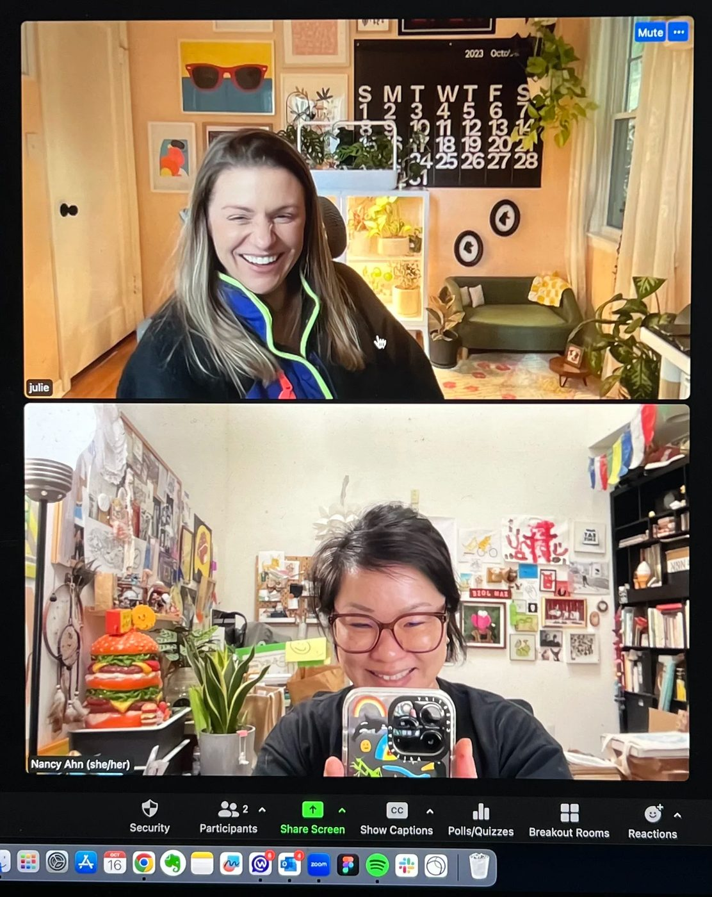
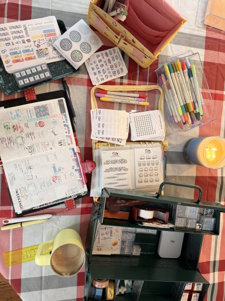
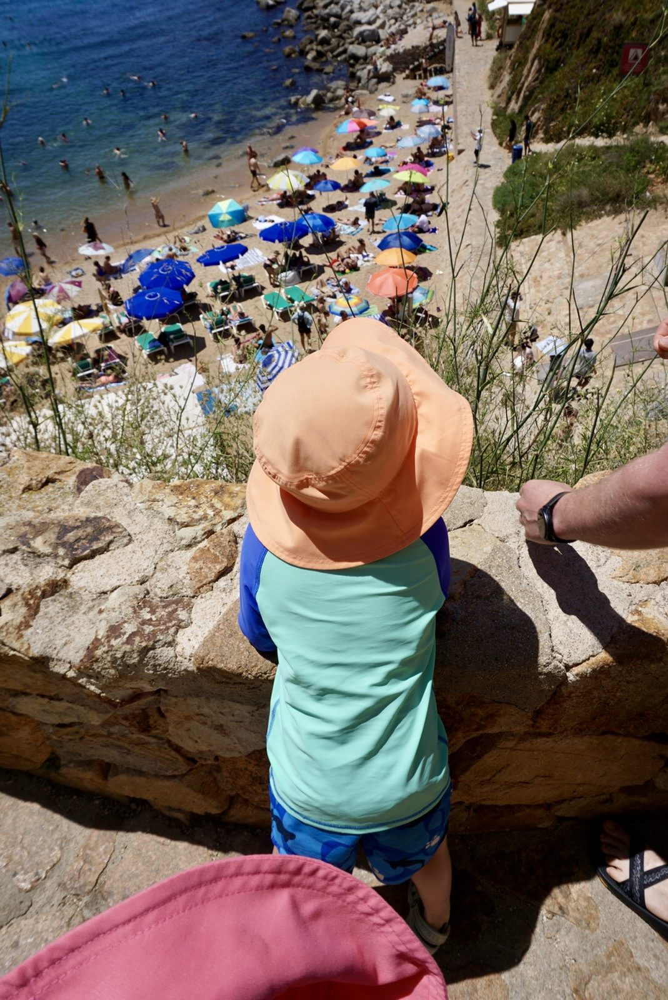
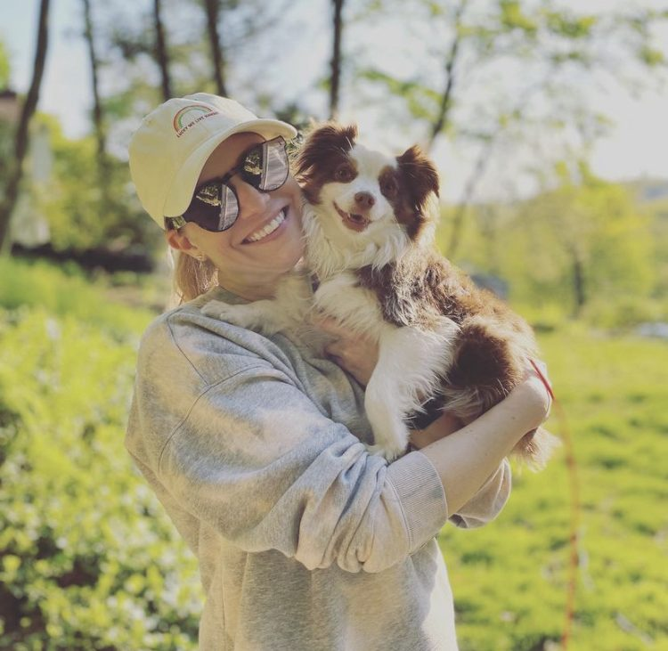
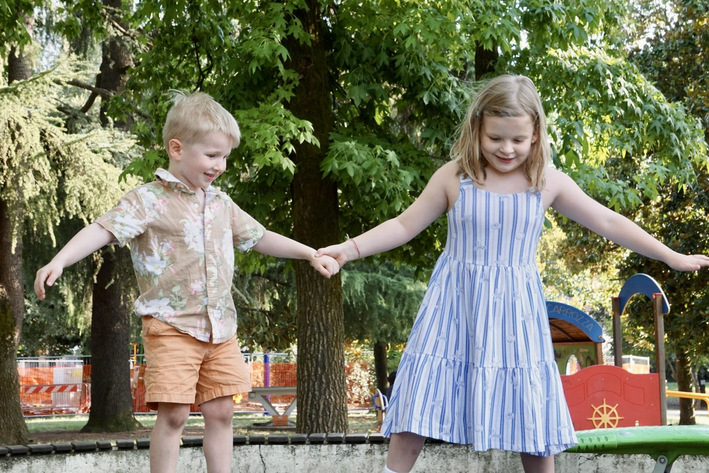
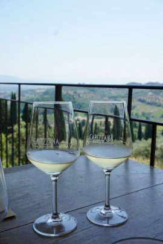
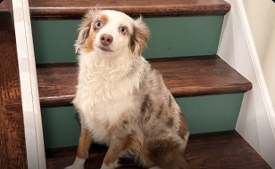
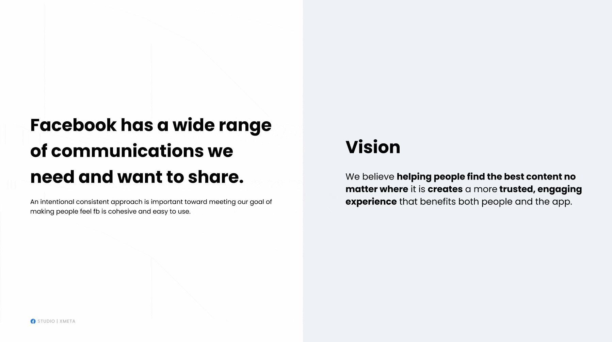

For Carola Pescio Canale and Ratna Desai · Principal Product Designer, Rovo & AI · Atlassian · Julie Torrisi-Coffey
> Hi Carola and Ratna
Help every team do its best work.

I've owned a surface 3 billion people use, across web and native.
Almost five years at Meta as a principal product designer. I owned Facebook Comments across iOS, Android, web, mobile web and FB Lite, and built the Visual Asset Framework, a design system 300+ designers adopted. I prototype in Claude Code, Cursor and SwiftUI.
3BillionPeople> Following up on our conversation
Four things you're hiring for.
You told me what this role needs. Here's where I've already done it.
Ambiguity across teams and products
That's most of my Meta story. The Comments case study walks through it: 9 teams, 30+ duplicate efforts, and no authority over any of them.
3BillionPeopleA design point of view, with the why
Every call I make comes with the rationale: the user problem, the tradeoff, the data. I prototype in code next to the engineers who ship it.
See 08 · How I work ↓A pulse on the market
A retro agent reviews my week every Sunday: how well I used AI in my workflow, and which new tools and trends I missed. I'm building agents that grade how well a build uses the design system. And I'm about to ship Cadence, a Figma plugin that drafts rollout comms from your design system, so comms read the same no matter which team sends them.
Retro agent Running · Graders In progress · Cadence In progress
Design system tokens past color and type
I extended ours to photography, illustration and motion, named for the purpose each asset serves, so the wrong asset can't land in the wrong message.
See 02 · Tokenized visual assets ↓None of this works from a blank prompt. It works because the rules, the voice and the decisions are written down where an agent can read them. Mine started as personal tools. The payoff is when a whole team works that way.
> For Atlassian: Rovo already has the team's pages, tickets and Looms. Add the design system to that, and every agent knows what on-brand looks like.
> Who is Julie?
A native New Yorker, now in Apex, NC.
Creating anything is my happy place. Lately that's journaling in my Hobonichi Techo, needlepoint, crochet, and shooting on my Sony a6000 (most of these photos). Travel is a good reminder to find joy in daily rituals.
- Tuscany sabbaticalJune in Spain and Switzerland. July in Tuscany for a 10-year anniversary with my partner Anthony, a chef, and our two kids, Cara and Jack. A social media detox and an intentional break from work.
- Food and travelThe history is in the food. Tuscan bread has no salt because of a medieval salt tax, and the recipe outlived it.
- Crafting joyFrom paper goods to jewelry, finding beauty in small-batch makers and supporting local artists.
- Dopamine nail artBright, vibrant and fun. I keep a whole Pinterest board just for this.






> Okay, enough about me. Here are 8 things that map to what Atlassian is building.
> 01 · Facebook brand refresh, in product
Standards other senior designers follow.
Facebook's brand refresh needed one standard for 300+ designers. I made the case for the Visual Asset Framework, ran it like a product and got it funded. Other teams adopted it.
300+
designers adopted it
78%
faster from design to engineering
$1.2M
saved every year
> For Atlassian: one AI design language across Jira, Confluence and Rovo only works if every team ships it.
3BillionPeople> 02 · Tokenized visual assets
Prototypes on real tokens, so engineering builds what you designed.
The usual way
Illustrations, photos and motion sit in an asset library. It drifts, design debt piles up, and everyone pretends not to notice.
What I built
Design systems usually stop at color and type. I pushed ours further, so illustrations, photos and motion became tokens too. Each one is named for the purpose it serves, like an error, a milestone or an empty state, so the wrong asset can't end up in the wrong message. Engineers can maintain it, and people and AI can both read it.
160 → 10
Empty states pilot: 160 variants down to 10 solutions, covering 88% of use cases.
> For Atlassian: Rovo prototypes on real Atlassian Design System tokens, so what we test is what ships.
> 03 · Bridge Bank · Goldman Sachs Private Wealth Management
Show people only what they need to act.
One question I bring to every product: how much information does someone need to take action?
At Goldman Sachs, that meant trust, joint, business, loan and credit accounts, on a phone, for advisors and their clients. The hard part wasn't fitting it all in. It was deciding what people actually need to make a decision, and leaving the rest out.
Follow what people do
Usage showed four main paths: accounts, transactions, documents, messages. So that's the IA.
Say no to most of it
The app gives a light, action-first overview. Deep analysis lives with support teams. Cutting was by design.
Four views, that's it
A total-of-all-accounts graph, money in and out, loans, and asset allocation.
Built the system too
Identity, color, type, icons and motion. Softer shapes, because money is stressful enough.
Tested before shipping
Prototypes at every fidelity, tested for comprehension and hierarchy.
> For Atlassian: someone asking Rovo a question mid-sprint needs the answer and the next action, not a wall of text.
> 04 · Attention and AI
AI is only as good as the structure you give it.
I wrote the Attention Signaling Playbook for Facebook's 16 billion daily notifications. The same idea runs through all my AI work: AI suggests, people decide.
AI you choose to open
At Meta I argued AI in comments should be something you open on purpose, inside the job you came to do. Leadership adopted it as a trust principle.
Cadence
My current build: a prototype that decides when AI can handle something alone and when a person needs to step in.
Prototyping on live data
Led design of an Xcode sandbox that let any discipline test ideas on live data with one line of code.

> For Atlassian: Rovo should show which page or ticket an answer came from, and make it easy to say no.
> 05 · From the attention signaling logic
Don't interrupt people unless you have to.
The loud surfaces are for urgent, relevant messages. Interrupt someone mid-task and they don't finish the job they came to do.
We also capped impressions, so nobody saw the same message on repeat. That's how you avoid message blindness and keep people liking the brand.
Pick the right surface
↑ More disruptive
↓ Less disruptive
Who gets to interrupt, in order
- Errors and warnings
- Trust, safety and policy
- Deprecations and changes
- Product and feature announcements
- Onboarding reminders
- Incentives and promotions
- Best practices
- Education and guidance
- Status updates
- Activity
- Milestones and recognition
> For Atlassian: a broken deploy earns a push. An agent suggestion waits inside the ticket.
> 06 · What I'd bring to Rovo
From one-off prompts to a real teammate.
Rovo already sits on the structure teams build every day: pages, tickets, briefs and plans. The clearer that structure, the better Rovo thinks with them. Here's where my work fits.
- Discover
Show up inside the work
Rovo at the moment someone needs it in Jira and Confluence, not as a place they have to remember to visit.
Proof: Facebook Comments shipped as one experience on iOS, Android, web, mobile web and FB Lite, for about 3 billion people.
- Trust
Answers with receipts
Every answer links to its source, and every agent action can be checked and undone.
Proof: At Meta I made AI something people click into on purpose, not something switched on across every surface. Leadership adopted it as a trust principle. Cadence decides when AI acts and when a person steps in.
- Habit
The right nudge, once
Suggest an agent when it would save real time, on the right surface, and capped so the next one still gets read.
Proof: the Attention Signaling Playbook for 16 billion daily notifications.
- Structure
Rules before results
I write the brief and the rules first, so AI knows what good looks like before it drafts anything. Less cleanup, more judgment.
Proof: my communication framework, built with the rules an engineer would write, so AI knows good output from bad.
- Scale
One AI design language
Patterns every product team can pick up, so AI feels like one Atlassian, not a dozen experiments.
Proof: the Visual Asset Framework, adopted by 300+ designers inside their Figma design kits. 78% faster from design to engineering.
> For Atlassian: I'd prototype Rovo flows on a real team's Jira and Confluence data, starting with the brief, so the AI works from structure, not a blank prompt.
> 07 · Executive escalations at Meta
Any challenge. Stabilized, then handed off.
On top of leading the Comments redesign, I took on 3 executive escalations, one after another.
Each one was in a part of the app I didn't own, with no authority over its designers. I found common ground to build from, got the work back on track, then handed it to another designer and went back to running my program on Comments.
Stabilize the workstream
Find the common ground between teams who don't report to you, and get everyone moving in one direction again.
Build the foundation
Set up the design foundation and a milestone roadmap the team can run without me.
Hand it off, go back
Hand the work to another designer, then back to running my program on Comments.
3
executive escalations, run alongside my own program
5
manager changes, with one clear plan the whole way through
Roadmaps that decide where to build next.
My roadmaps have go/no-go milestones. Each build teaches us something for the next one and shows which direction to build in. That's how you lay a foundation a product can change quickly on top of.
> For Atlassian: Rovo touches every product team. I've aligned leaders who didn't report to me on one direction.
> 08 · How I work
Hands-on. Leading through influence.
I lead by example. Designers follow a designer whose craft proves their level, so respect gets earned by the work.
I'm a natural culture builder and a glass-half-full optimist. I don't start with the constraints that stop us. I start with what we can do.
Brand person, product brain
Nine years in brand and digital marketing (R/GA, LBi, Profero). I get brand designers, and I bring them along on what live-product assets actually need.
Context, not control
Senior designers get real scope and a clear path. I set the bar and give candid feedback in the moment. I don't compete with them for the work.
Peers sent me their work
Other design directors at Meta sent their designers to me for review before shipping. That's what a trusted partner looks like.
Meetings earn their spot
Sprints, retros, crits and roadmaps with clear go/no-go calls. Decisions get written down so they travel without me. Useless meeting? We kill it.
Leading through change
Managed 4 and directed 15 designers across 9 teams at Meta, through 5 manager changes. A clear plan kept us moving.
See the work
Facebook Comments redesign
Facebook brand refresh in product
Password: 3BillionPeople
Bridge Bank
Cadence
> For Atlassian: I'd teach designers to put their thinking into docs and tickets AI can use, so AI scales the team's judgment, not just its output.
> Testimonials from partners
“Thanks for the leadership, collaboration and knowledgeable input tailoring the Visual Asset Framework. The nomenclature, definitions and overall work will prove to help so many future conversations and allow faster alignment on all workstreams.”
“Thanks for being an inclusive partner on the [Visual Asset Framework] and Glow-Up project and listening to [our] POV on the FLEX glossary. Our team felt seen and heard, and we appreciate you.”
“You are truly a Figma queen. Your efforts in educating our new hires on both the basics and advanced features of Figma will undoubtedly set them up for success.”
“Your ability to navigate through ambiguity and drive meaningful conversations with both internal teams and XFN partners has been instrumental in our progress.”
“I AM SO EXCITED by this effort. It's literally bringing clarity to a question I've asked myself for years.”
“Thank you for being the conductor driving this train forward. All aboard the Visual Asset Framework train.”
“Thanks for treating me like a product designer. The past few weeks working with you on strategic solutions and embracing ambiguity has given me a huge confidence boost and helped me feel validated in my career transition goals.”
“Thanks so much for locating and sharing so many surface audits this half. Your efforts and time saved our team a ton of work and unblocked us so we could pursue explorations in a timely manner.”
“Thank you for putting together such an amazing workshop for Figma! I learned so so much, this is really going to help speed up my process.”
Thank you.
Thank you for today. I'd love to keep going on how a team's written-down thinking makes Rovo a better teammate.